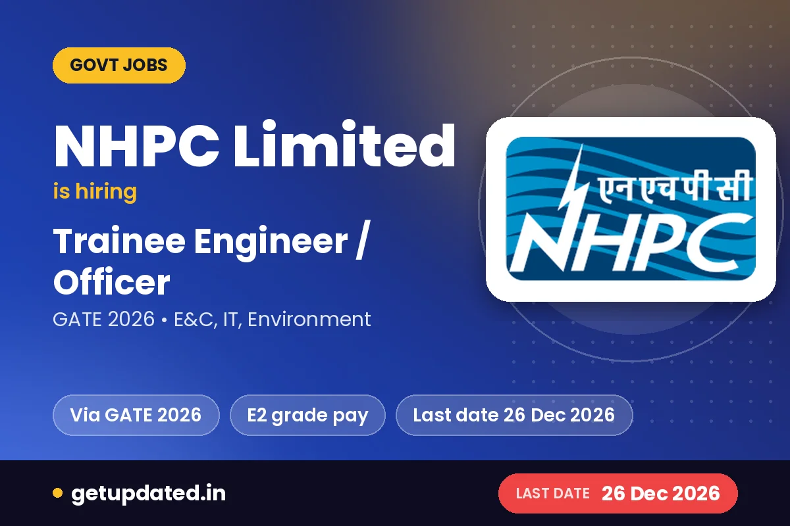

Bluebex Software Pvt. Ltd. has opened applications for a Software Engineer Intern role in Bengaluru, Karnataka. The posting was published on LinkedIn by the company itself and applications are taken through LinkedIn Easy Apply, so there is no long registration process to go through.
The role suits students and recent graduates in Computer Science, Information Technology or related fields who want to work on live products rather than only classroom projects. Interns work with the engineering team on APIs, databases, debugging and code reviews. The company also mentions a potential full-time position based on performance and business requirements.
This guide covers what the role involves, who should apply, how to prepare, and the mistakes to avoid. Details the company has not published, such as stipend, duration and last date, are marked as not disclosed.
Table of Contents
- Quick Highlights
- About Bluebex
- Role Overview
- Key Responsibilities
- Eligibility and Required Skills
- Stipend and What You Gain
- How to Apply
- Selection Process
- Preparation Plan
- Likely Interview Topics
- Common Mistakes to Avoid
- Official Links and Final Checklist
- Final Takeaway
- Also Read
- FAQs
Quick Highlights
| Particular | Details |
|---|---|
| Company | Bluebex Software Pvt. Ltd. |
| Role | Software Engineer Intern |
| Location | Bengaluru, Karnataka, India |
| Employment type | Internship (listed as full-time on LinkedIn) |
| Industry | Software Development |
| Qualification | Pursuing or recently completed Bachelor's in CS, IT or related field |
| Stipend | Not disclosed |
| Duration | Not disclosed |
| Last date | Not disclosed |
| How to apply | LinkedIn Easy Apply |
Apply early: the posting went live only about a day before this article, and no closing date is given.
About Bluebex
Bluebex Software Pvt. Ltd. describes itself as a technology-driven software company that builds digital products and scalable software solutions. Its work spans several domains, including education technology, business automation, customer engagement and enterprise software.
For a fresher, a product company with several domains can be a good place to learn. You are likely to see different kinds of problems, such as user-facing apps, backend services and automation workflows, instead of repeating one narrow task. The company says it is looking for enthusiastic interns who are passionate about technology, problem-solving and building real-world software.
Role Overview
As a Software Engineer Intern, you will work closely with the engineering team to design, develop, test and maintain software applications. The posting stresses hands-on exposure to live projects, modern development technologies and real engineering challenges.
The role is aimed at candidates who want to strengthen their programming skills, understand how professional software teams work, and gain practical industry experience. Since the company says interns can contribute to production projects, expect to be treated as part of the team and not only as an observer.

Key Responsibilities
The company lists these day-to-day responsibilities:
- Assist in designing, developing and maintaining software applications
- Write clean, efficient, reusable and maintainable code
- Work with senior developers to understand project requirements and technical specifications
- Develop and integrate REST APIs
- Participate in debugging, testing and resolving software issues
- Work with databases and understand data management concepts
- Collaborate with the team using Git and version control
- Participate in code reviews and follow best practices
- Help improve application performance, reliability and user experience
- Learn modern frameworks, libraries and development tools
- Document technical processes and development activities
- Contribute ideas to improve existing products
Notice the mix: coding, APIs, databases, testing, documentation and code reviews. This is close to the full cycle of real software work, which is useful experience for your first resume.
Eligibility and Required Skills
The posting prefers candidates who are pursuing or have recently completed a Bachelor's degree in Computer Science, Information Technology or a related field. A specific batch year, percentage cut-off or backlog rule is not mentioned.
Required skills
- Basic knowledge of at least one language: Java, Kotlin, JavaScript, Python or C++
- Understanding of object-oriented programming concepts
- Basic knowledge of data structures and algorithms
- Understanding of databases such as MySQL, PostgreSQL or MongoDB
- Basic understanding of REST APIs and client-server architecture
- Familiarity with Git and GitHub
- Good analytical and problem-solving skills
- Willingness to learn new technologies and development practices
Good to have
- Familiarity with HTML, CSS and JavaScript (listed as an advantage)
- Personal projects, academic projects or open-source contributions
- Exposure to Android development, React, Node.js, Java, Kotlin or similar technologies
- Basic understanding of cloud platforms and deployment concepts
Projects matter more than marks
The posting asks for "basic" knowledge in most areas, so a small working project on GitHub can help you more than a long list of tools you cannot explain.
Stipend and What You Gain
The posting does not disclose a stipend or the internship duration. Do not assume a figure from other listings. If you reach the interview stage, politely ask about the stipend, duration and working mode (office or hybrid) before accepting.
What the company says you will gain:
- Hands-on experience on real-world software products
- Work with experienced software engineers and mentorship
- Exposure to modern tools and technologies
- Practical experience in application development, APIs and databases
- Understanding of professional coding standards and workflows
- A chance to contribute to production projects
- A potential full-time opportunity based on performance and business needs
The full-time possibility is not a promise. Treat it as a reward for strong performance, which means consistent delivery, good communication and a willingness to learn.
How to Apply
- Open the employer's LinkedIn posting from the Official Links section below.
- Log in to your LinkedIn account. Update your profile photo, headline, education and skills first.
- Click Easy Apply and fill in the details asked.
- Upload an up-to-date one-page resume with your degree, skills and projects.
- Add your GitHub profile or project links if the form allows it.
- Review every field, then submit the application.
- Keep your phone and email active, and check LinkedIn messages for updates.
Last date not disclosed
Easy Apply postings can be closed any time once enough applications arrive. Apply as soon as your resume is ready.
Selection Process
The company has not published its selection steps. For intern roles like this, candidates are commonly shortlisted from their resume and then speak with the team. Treat the following as general preparation, not confirmed rounds. You may be asked about your projects, basic coding or data structure problems, and database and API fundamentals.
Because the posting lists specific skills, expect questions to follow that list. Be ready to explain anything on your resume in simple words.

Preparation Plan
A focused one or two weeks is enough to revise the basics.
Programming and OOP
Pick one language from the list, such as Java, Python or JavaScript, and be comfortable writing small programs in it. Revise classes, objects, inheritance, polymorphism, encapsulation and abstraction, and be able to give real examples of each.
Data structures and algorithms
Practise arrays, strings, linked lists, stacks, queues, hash maps and basic sorting and searching. Solve easy and medium problems and explain your approach aloud.
Databases and APIs
Revise SQL basics: SELECT, JOIN, GROUP BY, primary and foreign keys. Understand what REST means, the common HTTP methods (GET, POST, PUT, DELETE), status codes and how a client talks to a server. If you can, build a small CRUD API and connect it to MySQL, PostgreSQL or MongoDB.
Git and GitHub
Know how to clone, branch, commit, push, create a pull request and resolve a simple merge conflict. Teams use these daily, and interns who are comfortable with them settle in faster.
Likely Interview Topics
- Explain a project you built: why, how, and what you would improve
- Four pillars of OOP with examples
- Difference between SQL and NoSQL databases
- What a REST API is and how you would design a simple one
- Basic coding question on arrays or strings
- Git workflow: branching and pull requests
- How you debug a failing program
- Why you want to work on software products and what you want to learn
Common Mistakes to Avoid
- Applying with an outdated resume. Add recent projects and a working GitHub link.
- Listing skills you cannot explain. Interviewers often pick one item and go deeper.
- Ignoring fundamentals. OOP, DSA and databases are explicitly listed, so do not skip them for trendy frameworks.
- Waiting too long. The last date is not disclosed.
- Not asking about stipend and duration. Clarify politely once the company engages with you.
- Trusting unofficial links. Apply only through the employer's LinkedIn posting, and never pay anyone for an internship.
Official Links and Final Checklist
Before you apply, check that:
- Your degree is in CS, IT or a related field (pursuing or recently completed)
- You can code in at least one listed language
- You know OOP, basic DSA, SQL and REST concepts
- Your GitHub has at least one or two clean projects
- Your LinkedIn profile and resume match each other
- You are comfortable working in Bengaluru
Final Takeaway
This Bluebex internship is a solid starting point for CS and IT freshers in Bengaluru who want real exposure to APIs, databases, Git workflows and code reviews. The stipend, duration and deadline are not published, so go in with clear questions. Revise your fundamentals, polish your projects and apply through LinkedIn Easy Apply soon.
Also Read

NHPC Trainee Engineer and Officer Recruitment 2026 Through GATE 2026: Apply Online from 27 November
Read now →
Qualcomm 2027 Campus Hire: Associate Engineer (Hardware) Jobs in Bengaluru for Freshers
Read now →
Amazon Hiring Software Dev Engineer I (SDE I) 2026 Graduates: Bengaluru, Hyderabad, Chennai
Read now →
M3 USA Hiring AI Engineering Intern (Remote) 2026: Eligibility, Skills and How to Apply
Read now →Browse all latest jobs & updates →
FAQs
1. Who is hiring for this internship?
Bluebex Software Pvt. Ltd., a software company building products in education technology, business automation, customer engagement and enterprise software.
2. Where is the job located?
The posting lists the location as Bengaluru, Karnataka, India.
3. Who can apply?
Candidates pursuing or recently completed a Bachelor's degree in Computer Science, Information Technology or a related field are preferred, with basic programming and problem-solving skills.
4. How do I apply?
Apply through LinkedIn Easy Apply on the employer's posting. The link is in the Official Links section.
5. Is the stipend mentioned?
No. The posting does not disclose the stipend or the internship duration, so ask during the process.
6. Which programming languages are needed?
Basic knowledge of at least one language such as Java, Kotlin, JavaScript, Python or C++ is required, along with OOP concepts.
7. Can this internship lead to a full-time job?
The posting mentions a potential full-time opportunity based on performance and business requirements. It is not guaranteed.
8. What is the last date to apply?
No last date is disclosed. The job was posted recently, so apply early.